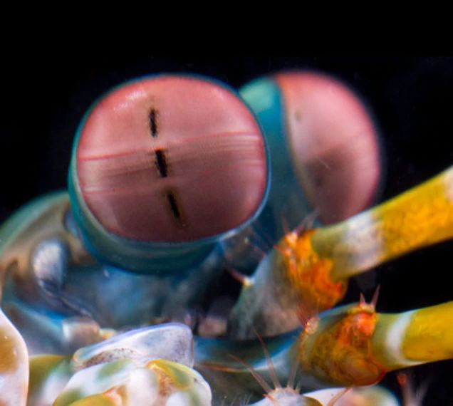

Fatos sobre o Stomatopoda
Informações Gerais
Odontodactylus scyllarus
This is the eye of a mantis shrimp—an marine animal that’s neither a mantis nor a shrimp, but a close relative of crabs and lobsters. It’s a compound eye, made of thousands of small units that each detects light independently. Those in the midband—the central stripe you can see in the photo—are special. They’re the ones that let the animal see colour.
| Reino | Filo | Subfilo | Classe | Subclasse | Ordem |
|---|---|---|---|---|---|
| Animalia | Arthropoda | Crustacea | Malacostraca | Hoplocarida | Stomatopoda Latreille, 1817 |
Fato 1
Fato 2